Sector 1045
Sector 1045 is a Half-Life 2 Roleplay map project with the main goal being to add a new awe-inspiring and designing ambience like seen in Half-Life: Alyx, while still staying true to the original game this game-mode Was made for. A well-thought city that merges every important infrastructure with as little time of walking as possible possible between each one of them will help servers to achieve the continuous interactions between players that makes the Charm of this game mode. Altogether, these traits that I consider as unexploited and barely even tried in the HL2RP genre are aiming to create the perfect map that can be used by any server, Whether they have a lot of players or not. The idea to create this map came to me after I've been working on C26V2. I always dreamed of having my very own Half-Life 2 roleplay map, and I've also been heavily inspired By the early concept are made for Half-Life: Alyx by Tristan Reidford. This project was started on the 17/05/2026 and is still in development.


City 26 V2
City 26 V2 is the edit of an already existing Half-Life 2 roleplay map. This map was used by Deep Gaming Roleplay, the biggest Half-Life 2 Roleplay Impulse Garry's Mod server. This edit took me 7 months to finish, From the 28th July, 2025 to the 22nd February, 2026. After the large-scale playtest that was conducted on This server during 2 weeks, I understood that some edits were necessary for the map to be perfect. That's why I started working on it again during the summer 2026 for Deep Gaming 2.
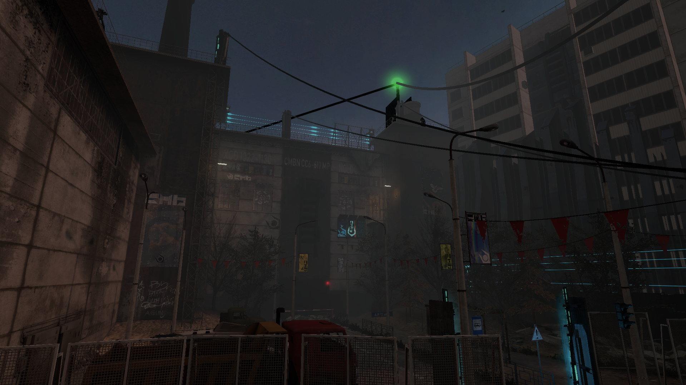
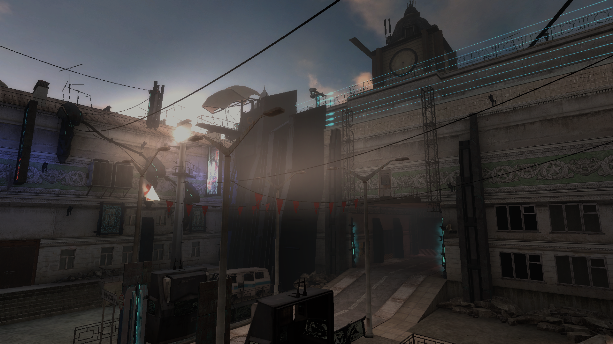


New York City Neighborhood
After editing an entire school for a School RP server, I decided to recreate a little classic New York Neighborhood on the outside of it, for the students to rest and have fun after their day. This map was started on the 1st April, 2026 and finished on the 22nd April, 2026.
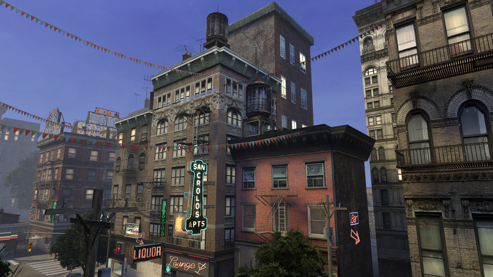
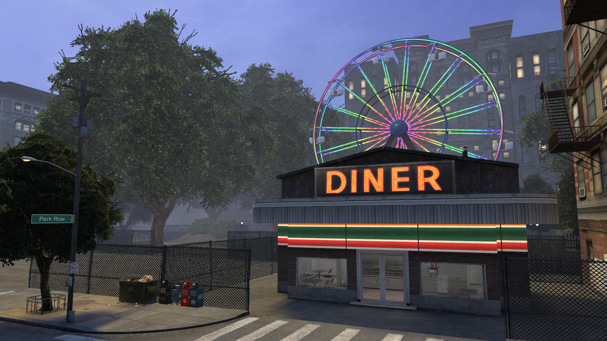

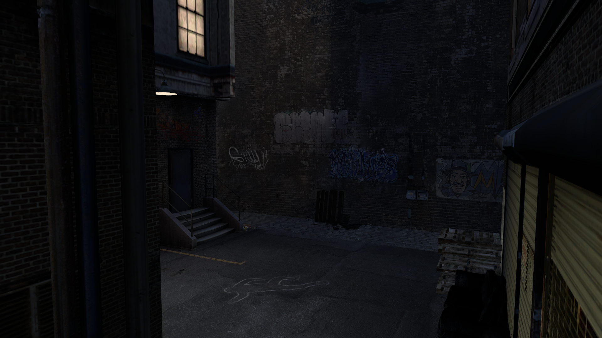
Apocalypse Roleplay Map (DayZ, St. Petersbourg)
This map was supposed to be used for a DayZ project on Garry's Mod, but it ended up being cancelled. Thanks to another project, I can now work on it again to make her fit a new theme, a post-apocalyptic urban area located in Saint Petersbourg, Russia. This map was started on the 9th of April, 2026 for the Day Z project and started back on the 1st July, 2026.
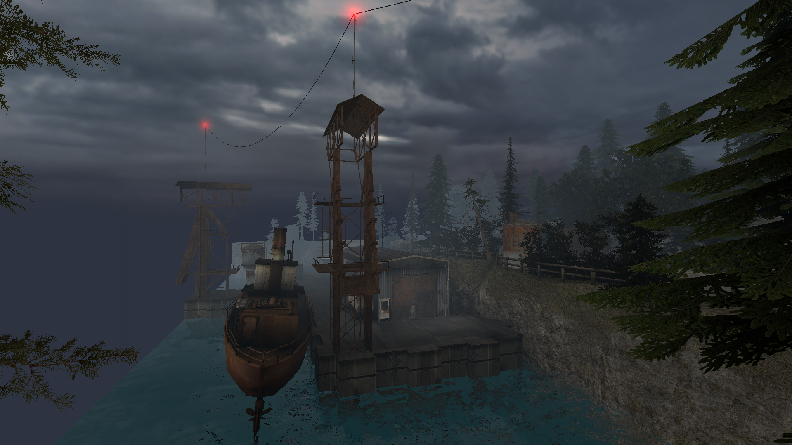


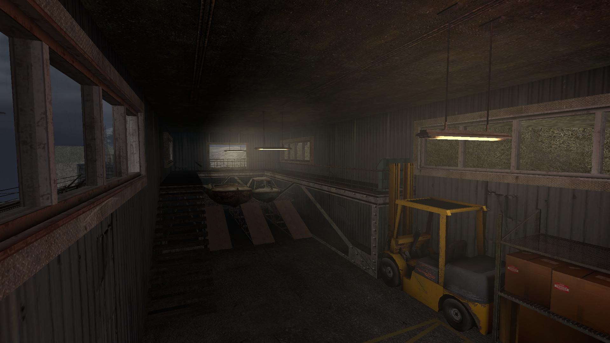
Half-Life: Alyx Source 1 Project
This project is, by far, the most ambitious that I have started. More than 4 months of work have been put to import Source 2 assets to Source 1. The project has also taken different directions, from a Roleplay map to a classic Sandbox one or a scenic one.
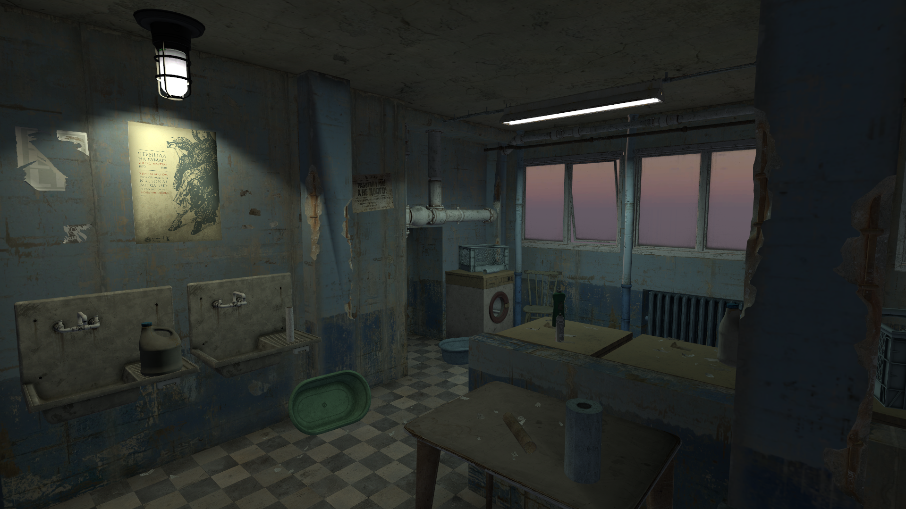
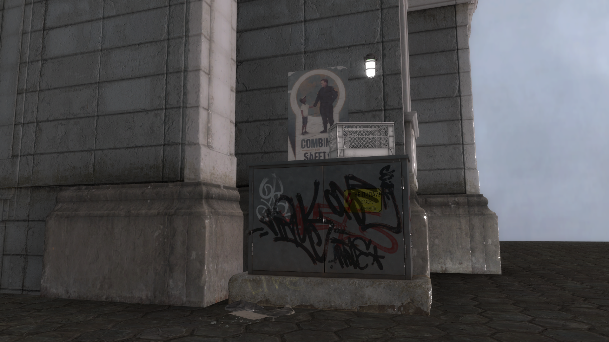
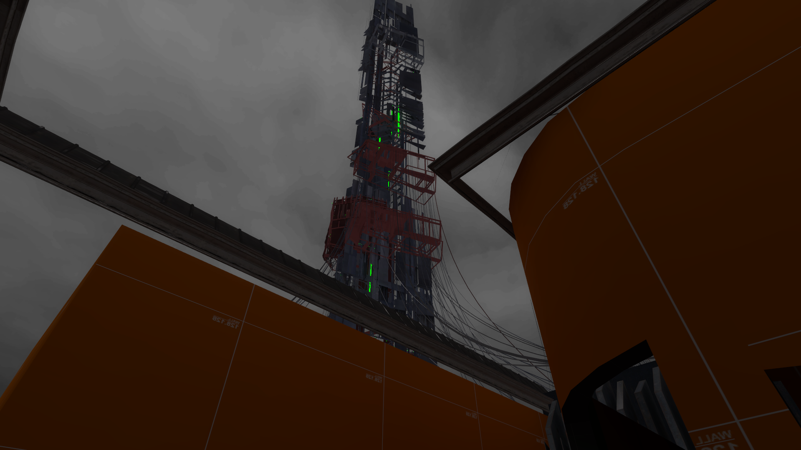

2 Hours Challenges
2 hours Challenge is a competition organised by the Hammer Editor Development Group. The goal is to make a make with a time limit of 2 hours (except for the Hoffman House, which is the 3rd picture) on a given theme and picture. These little competitions were organised weekly in 2025, and I was participating at most of them.
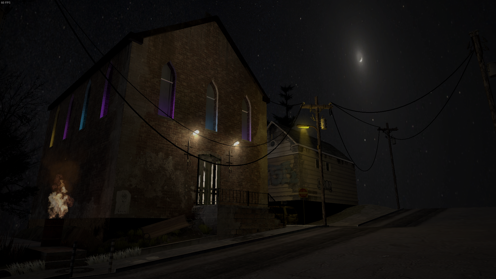
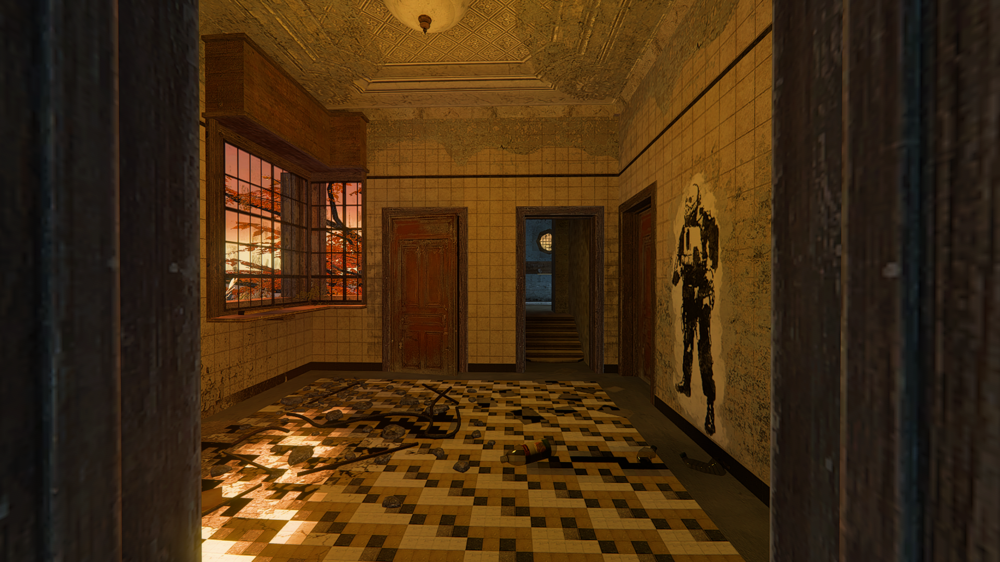
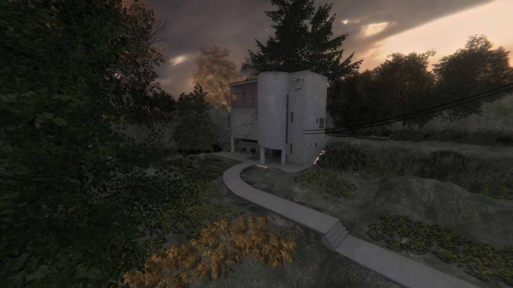